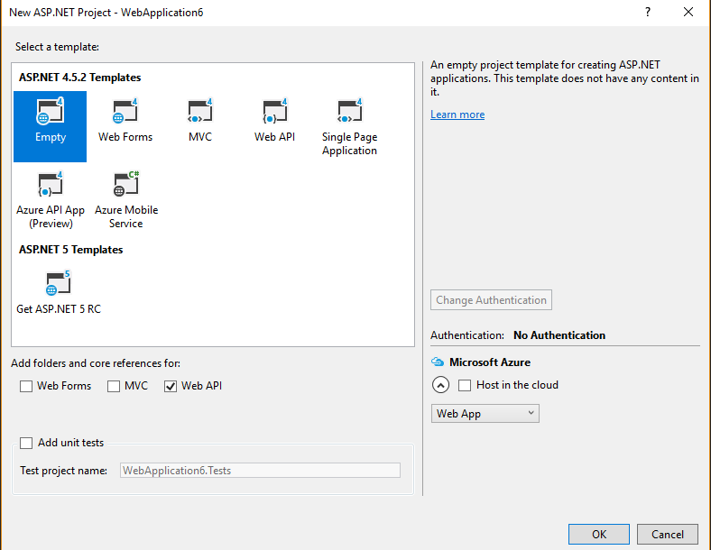
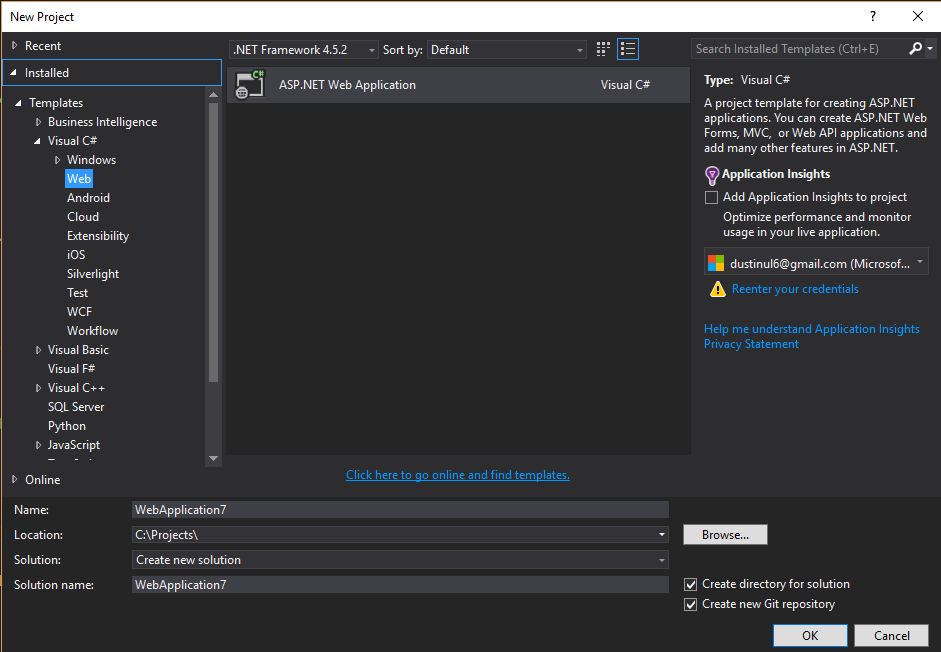

後端簡介
建立簡單的Api (無資料庫)
目標:能夠接收 Http Get Request, 並回傳JSON 此階段先不從SQL撈資料，資料直接寫在.NET code 中
- 新增專案
![NewAspNetProject][newaspnet] 
- 
選擇新增ASP.NET Web Application
-
定義Model 在.NET 中，所有資料都要對應到一個Type, 例如string, decimal, string[] 等等。 我們可以定義自己的Type: Class
-